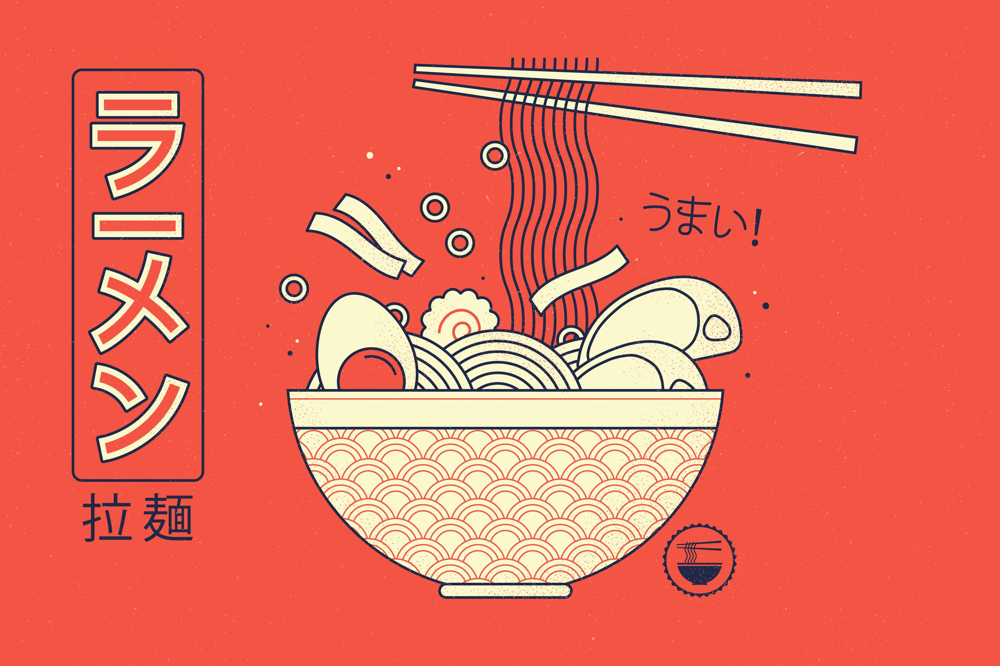

ラーメン
A BOWL OF LOVE FROM
JAPANESE CUISINE
FOR YOU
Ramen is a traditional Japanese noodle soup. It consists of Chinese wheat noodles served in a meat or fish-based broth & uses toppings such as sliced pork, nori, menma, and scallions.
